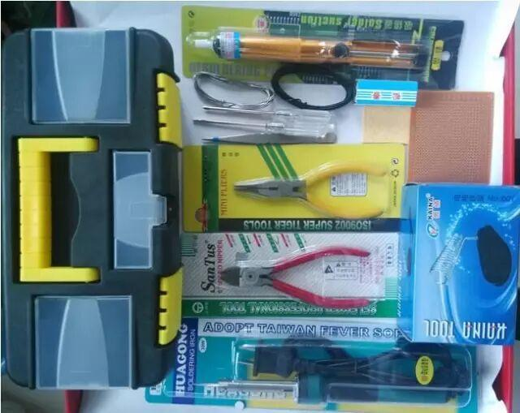
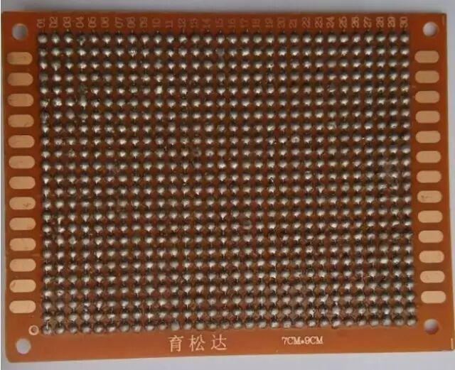
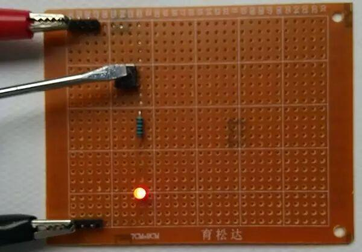
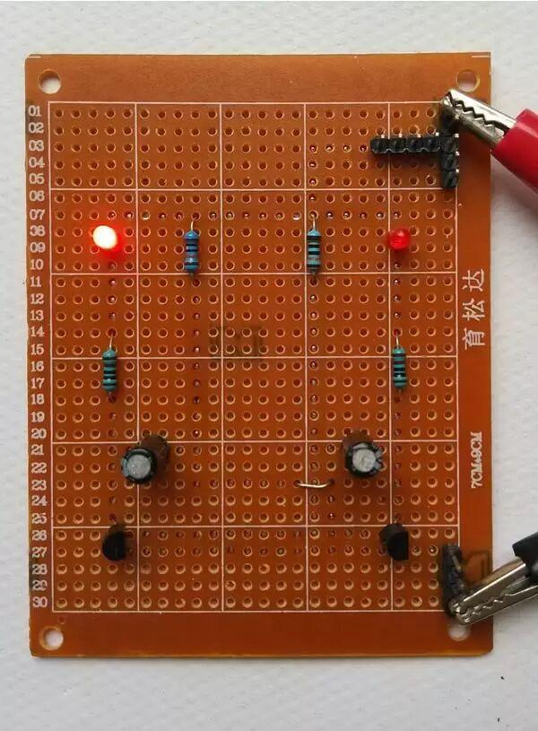
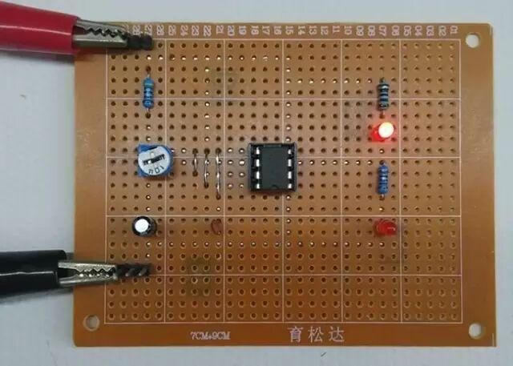
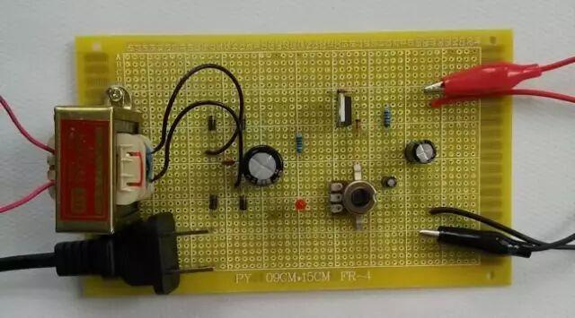
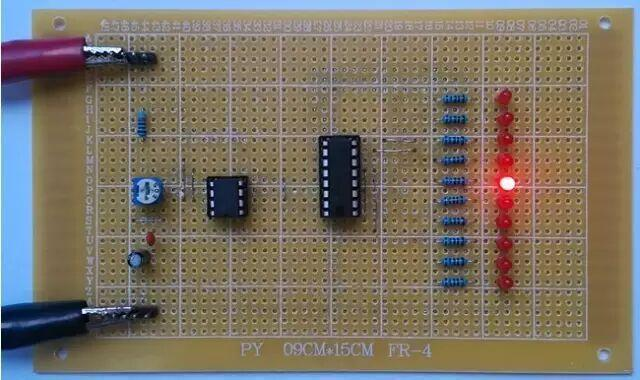
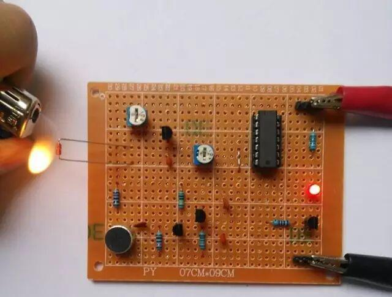
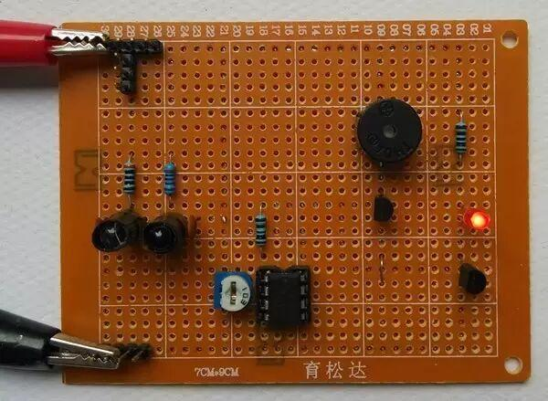

使用小程序
我们的口号是：提高实践动手能力从实践开始，从零开始。
任务1：准备好一切。（预计48个小时内完成）
把电子制作工具准备好，把电子制作套件准备好，把电脑准备好，常见的电子工具最好配备烙铁、烙铁架、高温海绵、镊子、一字起、十字起、尖嘴钳、斜口钳、铝壳吸锡器、松香、工具盒等，如下图所示。

当然还要准备好一些理论知识
任务2：焊接技术强化训练。（预计24个小时内完成）
为了掌握用万能板焊接电子制作产品的技能，必须掌握五步焊接法和拖焊技术。只有五步焊接法和拖焊技术成熟了，焊接出来的电路板的电气性能才稳定、可靠，作为一个电子初学者，这是必须掌握的实践技能之一。
为了确保拖焊技术成熟，建议初学者强化练习2到3块万能板，达到要求后再焊接电子制作产品。请记住：焊接技术是基础，基础有多扎实，下图是作品。

任务3：完成手电筒模型电路产品制作。（预计6个小时内完成）
学习了前面的焊接技术后，现在开始小试牛刀，焊接第一个电子制作产品，掌握电路模型的概念和电路的组成结构，掌握色环电阻的识别与检测、轻触开关的识别与检测、发光二极管的识别与检测，下图成品。

任务4：完成多谐振荡器双闪灯电路产品制作。（预计6个小时内完成）
通过分析与制作多谐振荡器双闪灯电路原理，掌握识别与检测电阻、电容、二极管、三极管。掌握识别简单的电路原理图，能够将原理图上的符号与实际元件一一对应，能准确判断上述元件的属性、极性，掌握PCB板中跳线的概念及使用，下图是作品。

任务5：完成基于555定时器闪光电路产品制作。（预计6个小时内完成）
555定时器可方便地构成单稳态触发器、多谐振荡器、施密特触发器等电路，闪光电路是利用多谐振荡器产生的脉冲信号控制而成。我们将要介绍555定时器的结构、引脚功能以及采用555定时器构成多谐振荡器，进一步掌握集成电路的使用方法，并利用多谐振荡器产生的脉冲信号控制二个发光二极管实现闪光电路，下图是作品。

任务6：完成LM317可调稳压直流电源电路产品制作。（预计6个小时内完成）
LM317是应用最为广泛的电源集成电路之一，它不仅具有固定式三端稳压电路的最简单形式，又具备输出电压可调的特点。此外，还具有调压范围宽、稳压性能好、噪声低、纹波抑制比高等优点。
完成本作品的主要目的是为了掌握变压器降压、二极管整流、电容滤波、LM317稳压等工作原理初步掌握电路调试方法和电压检测方法，下图是作品。

任务7：完成4017十路流水灯电路产品制作。（预计12个小时内完成）
本电路的设计依据来源于闹市中的店铺LED广告牌，具有一定的实用价值。掌握由555构成的多谐振荡器和由4017组成的十进制移位计数器的工作原理，以及两部分电路同时工作产生的实际效果。完成本作品的主要目的是为了掌握555构成的多谐振荡器电路和由4017组成的十进制移位计数器电路的分析方法，及复杂电路检修方法，下图是作品。

任务8：完成模拟电子蜡烛电路产品制作。（预计12个小时内完成）
模拟电子蜡烛具有“火柴点火，风吹火熄”的仿真性，设计原形来源于生日晚会生活情节。
本电路综合了模拟电路、数字电路、传感器电路等知识，完成本作品的主要目的是为了掌握温度传感器、声音传感器的应用，掌握利用D触发器改装成RS触发的方法，能分析电路结构及其工作原理，能用万用表调试带传感器的复杂电路，下图是作品。

任务9：完成红外二极管感应电路产品制作。（预计12个小时内完成）
本电路设计思路来源于银行自动开门关门的生活场景，人走进银行，门自动打开，离开后门自动关闭。用手靠近红外发射管和红外接收管时，蜂鸣器发声，LED灯点亮，手移开后立即停止发声、LED灯熄灭，灵敏度非常高。
完成本作品的主要目的是为了学习红外发射管、红外接收管、双运算放大器LM358的工作原理及使用方法，同时掌握电压检测法、电阻检测法等电路调试的基本方法，下图是作品。

任务10：学习总结，经验总结。（预计48个小时内完成）
首先恭喜你，到此，你已经完全能手工制作电子产品了，顺利跨入了电子技术的大门，有了这个基础，为你学习后面的技术扫清了障碍。